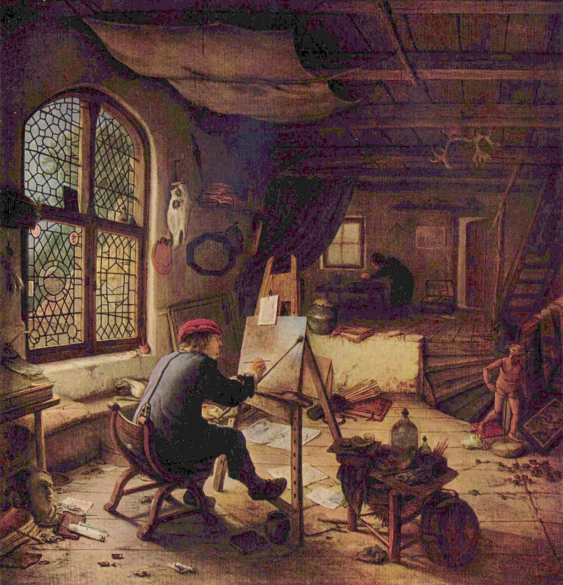

<head>
<meta charset="UTF-8" />
<meta name="keywords" content="drawing, painting" />
<meta name="description" content="drawings by Sunjy" />
<title>Sunjy</title>
<link rel="shortcut icon" type="image/x-icon" href="../../mImages/mCommon/favicon.ico" media="screen" />
<link rel="stylesheet" type="text/css" href="../../mCsses/mCommon/mCssA.css" />
<link rel="stylesheet" type="text/css" href="../../mCsses/mCommon/mCssB.css" />
<link rel="stylesheet" type="text/css" href="../../mCsses/mCommon/mCssC.css" />
<link rel="stylesheet" type="text/css" href="../../mCsses/mCommon/mCssD.css" />
<link rel="stylesheet" type="text/css" href="../../mCsses/mContent/mCssA.css" />
<link rel="stylesheet" type="text/css" href="../../mCsses/mContent/mCssB.css" />
<link rel="stylesheet" type="text/css" href="../../mCsses/mContent/mCssC.css" />
<link rel="stylesheet" type="text/css" href="../../mCsses/mContent/mCssD.css" />
</head>
<script type="text/javascript" src="../../mScripts/mContent/mContentAA.js" /></script>
<script type="text/javascript" src="../../mScripts/mContent/mContentAB.js" /></script>
<script type="text/javascript" src="../../mScripts/mContent/mContentAC.js" /></script>
<script type="text/javascript" src="../../mScripts/mContent/mContentAD.js" /></script>
<script type="text/javascript"></script> 
<script type="text/javascript">
document.write('<div class="mImgAbsolute"></div>');
/*
document.write('<p class="mFontSizeBColor" />From a white paper...</p>');
document.write('<table class="center"><tr><td>');
document.write('');
document.write('</td></tr></table>');
*/
</script>


<script type="text/javascript">
document.write('<p class="mFontSizeBColor" />The Painter in his Studio</p>');
document.write('<p class="mFontSizeSColor" />“The Painter in his Studio” by Adriaen van Ostade depicts a painter sitting with his back to the viewer, in a dilapidated studio. The painter seated in a low chair while working at an easel, supporting his brush-holding hand with a maulstick.<br><br>In the background, a young apprentice is assisting him by grinding and mixing colors on the table at the far wall.<br><br>The studio is full of references to his education and intellectual interests, including prints, a plaster cast, a wooden model, props, animal skulls, and books.<br></p>');
document.write('<table class="center" /><tr><td>');
document.write('<br>In the background, a young apprentice is assisting him by grinding and mixing colors on the table at the far wall.<br><br>The studio is full of references to his education and intellectual interests, including prints, a plaster cast, a wooden model, props, animal skulls, and books.<br>" />');
document.write('</td></tr></table>');
</script>


